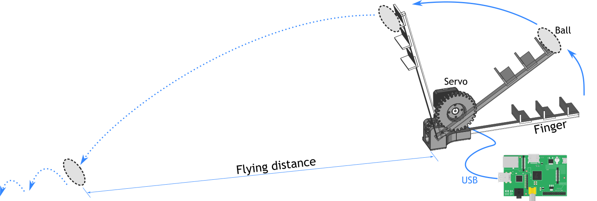
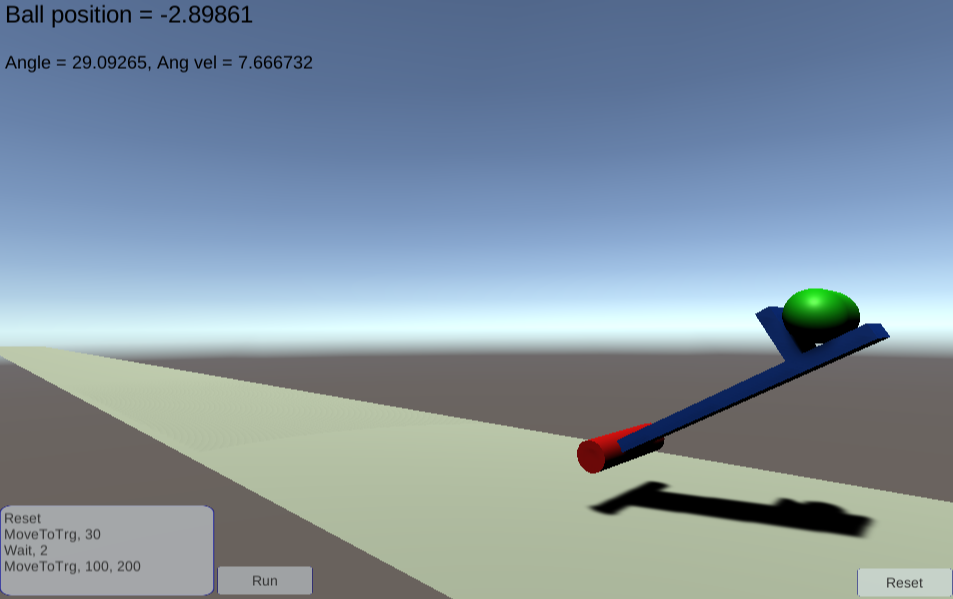
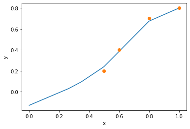

Machine Learning for Robot Control (Lab Experiment II)¶
last modified: 20231011
This Notebook is originally written by Akihiko Yamaguchi (@akihikoy).
Abstract¶
In these experiments, we explore AI (artificial intelligence) technologies for robot control. Especially we use machine learning and optimization. The task is a throwing motion of a single-finger robot where we control the ball behavior thrown by the robot. When the ball behavior is difficult to analyze, using AI tools is an approach to achieve the task. The goal of these experiments is learning the use of AI technologies under the context of robot control.
Attention
Bring a laptop PC to the class for these experiments. A web browser should be installed (Google Chrome is recommended).
1. Robot System Overview¶
1.1. Physical Robot¶
The robot we use is a single-finger robot with 1 degree-of-freedom. It consists of 3D printed frames and an actuator, Dynamixel servo motor. The Dynamixel servo is connected to a mini PC (Raspberry Pi) with USB, which is connected to a local network. All programs are installed on the mini PC including the Dynamixel controller and AI tools.
By running a Python program in the mini PC, we can control the robot. Optionally, students may connect their PCs to the network over WiFi, and log on to the mini PC from a web browser.
The following figure illustrates the system and the ball throwing task.
1.2. Robot Simulator¶
We use a robot simulator similar to the physical single-finger robot. It is implemented with a game engine Unity, and simulating the dynamics of the robot and a ball. You can access to the robot from here:
http://akihikoy.net/p/FingerRobotWebGL/index.html
You can see a text box in the left bottom corner, and the Run button. The text box describes a list of commands to operate the robot. Click the Run button to execute the commands. In default, it moves to the 30 degree position, waits for 2 seconds, and moves to 100 degree with 200 power. You will see that the robot throws the ball, and after a few seconds, the ball lands on the ground. The ball position is always displayed at the left top corner. Once if the ball lands, “First landing position” is displayed, which denotes the flying distance of the ball.
2. Programming the Robot¶
2.1. Physical Robot¶
Note
The first 3 steps are done by the instructor.
Log in to Raspberry Pi system.
Run
Run the following setup codes:
import os os.chdir('prg/ai_ctrl_1/student') import sys sys.path.append('../sample') from libaictrl1 import * dxl = SetupRobot()
Attention
By running the following codes, the robot moves. Hold the base of the robot with attention not to injure your fingers.
Move the robot to the initial pose:
MoveToTrg(dxl, 0.2, 1.0)
Let’s throw the ball:
MoveToTrg(dxl, 0.8, 0.7)
-
MoveToTrg(dxl, d_angle, effort)¶ is a function to move the robot to a target position, where
dxlis the variable returned bySetupRobot(),d_angleis the target angle in radian, andeffortis torque to use (should be in [0, 1]). Ifeffort= 0, the robot will not move.
2.2. Robot Simulator¶
Unlike the physical robot, we cannot operate the simulator robot from the Python program. Instead, we use the command box on the simulator.
Type following commands in the left bottom text box of the simulator:
Reset
MoveToTrg, 30
Wait, 2
MoveToTrg, 100, 200
The command list is described in the CSV (comma-separated values) format. The first value denotes a command type.
There are only three command types: Reset to reset the simulation
(the ball position and the robot position are initialized), Wait
to sleep before executing the next commands, and MoveToTrg to move
the robot.
MoveToTrg is a command to move the robot to a target position:
MoveToTrg, target_angle, effort
where target_angle is the target angle in degree, and effort
is maximum force to operate the robot (should be in [0, 800]).
If effort = 0, the robot will lose the power.
3. Theoretical Overview¶
The motion you made in the previous step is a throwing motion, but the ball is not controlled. We are interested in controlling the flying distance of the ball (let’s define the distance as the length between the robot mount and the first landing point). The flying distance is decided by several factors:
- Motion of the robot.
- We control the robot with target positions. At least, two target positions are necessary: the initial position and the final position. The motion from the initial to the final positions is controlled by the internal controller of the servo, but you can adjust it by changing the effort parameter.
- Ball property (mass distribution, friction, etc.) that affects ball behavior.
- The elasticity of the robot.
- Air resistance.
Sometimes it is not easy to analyze the dynamics of the robot and the ball with considering all these factors.
Using machine learning tools is a solution.
Especially, we take an approach of model-based reinforcement learning. Refer to literature of machine learning, reinforcement learning, and optimization for the details. Here we describe the ideas briefly:
- We use regression to model the unknown dynamics.
- In this case, the dynamics is a mapping from input (an initial state and control parameter) to output (the flying distance).
- Regression is a technology to make such a mapping (estimator from input to output) with pairs of (input, output) data.
- We use optimization to find
a control parameter to achieve desired control.
- The goal is throwing a ball to a given target distance.
3.1. Regression¶
When data of pairs of input \(x\) and output \(y\) is given (\(\mathit{data} = \{x_k, y_k \mid k=1,2,...\}\)), creating a model \(F\) that estimates \(y\) for a given \(x\) is called regression:
The model \(F\) is trained so that the errors between \(y_k\) and \(F(x_k)\) are minimized.
The design of the model \(F\) varies. A simplest model is a linear model. However the capability of linear models is limited; the modeling error becomes large when modeling nonlinear functions.
There are nonlinear approaches of representing \(F\). The examples are Gaussian processes for regression (GPR) and (artificial) neural networks. In these experiments, we use a version of neural networks, multi-layer perceptron (MLP).
MLP can represent nonlinear functions in general. It has some parameters, including
- The number of hidden layers and units that are designed by the users.
- Weights of the node connections that are learned from data with the back-propagation method.
Note
Although MLP can learn a function where \(x\) and \(y\) are multidimensional vectors, we consider both \(x\) and \(y\) are single dimensional.
3.2. Optimization¶
When an objective function \(E(x)\) is given, finding \(x\) that minimizes \(E\) is called optimization. \(E\) is a scalar function while \(x\) can be multi-dimensional. \(E\) is also called evaluation function, cost function, loss function, etc. Note that maximizing \(E\) is the same problem; just consider a negative of \(E\) (because \(\max{E} = \min{(-E)}\)).
When the objective function \(E\) is simple, we could solve this problem analytically. However when \(E\) is complicated, finding analytic solution becomes difficult. In that case, we can take a numerical optimization approach.
A simple example is hill climbing. We start with a random (or certain) initial value \(x_0\), and compute the gradient of \(E\) with respect to \(x\) around \(x_0\):
Then modifying \(x_0\) to the negative direction of the gradient, the value of the evaluation function at the modified \(x\) becomes smaller. Iterating this updates, we will finally find \(x\) that minimizes \(E\).
There are other methods like hill climbing that use gradients. For example gradient descent method, and Newton’s method. The back-propagation method used to train MLP is also a gradient method.
A drawback of the gradient method is that it is often trapped by local optima. You can imagine that by assuming \(E\) has multiple peak points. This issue sometimes happens when \(E\) involves learned models such as MLP.
CMA-ES (Covariance Matrix Adaptation Evolution Strategy) is another approach where we do not have to give the gradient of \(E\). It uses multiple search points (population), which makes it more robust to noisy function than gradient methods.
3.3. Model-based Reinforcement Learning for Throwing Motion¶
Let us assume a control parameter \(x\) that changes the flying distance of the ball thrown by the robot. For example \(x\) is an effort parameter.
Let \(y\) denote the flying distance.
Let \(f\) denote the dynamics, i.e. \(y = f(x)\). Note that we give up to model \(f\) analytically, i.e. we do not know \(f\).
The ball throwing problem: for a given target of flying distance \(y_\text{trg}\), find a control parameter \(x_\text{opt}\) that achieves \(y_\text{trg}\), i.e. \(y_\text{trg} \approx f(x_\text{opt})\). Note that we need to solve this problem for any \(y_\text{trg}\).
The solution idea is as follows:
- Learning phase (Training Phase):
- Throwing the ball with random control parameters and observing the flying distances. We obtain \(\{x,y \mid k=1,2,...,N\}\).
- Training an MLP \(f\) with the data obtained above.
- Testing phase (Inferring Phase):
- For a given target \(y_\text{trg}\), finding a control parameter \(x_\text{opt}\) such that \(y_\text{trg} \approx f(x_\text{opt})\). This problem is formulated as an optimization problem, and solved by CMA-ES.
- Executing the solution \(x_\text{opt}\) and measuring the error to evaluate the performance.
The idea of finding the control parameter with optimization is as follows: We define the objective function as a squared error of \(y_\text{trg}\) and \(f(x)\):
We use CMA-ES to minimize this objective function with respect to \(x\). The found \(x\) is \(x_\text{opt}\) that satisfies \(y_\text{trg} \approx f(x_\text{opt})\).
Note
Considering that our objective function is very simple, CMA-ES may be an excessive choice here. The main focus of our experiments is on understanding the general concept. You will need to study more to understand the pros and cons of individual methods.
4. Experiments¶
We practice the theory mentioned above step by step.
4.1 Setup Google Colaboratory¶
Open a web browser and access Google colaboratory (Colab, in short):
Click
New notebook, or open an existing file if you want to resume.Change the file name to
CXXXX_NAME_NAME- Select .
CXXXXdenotes your student ID.NAME_NAMEdenotes your name in alphabet (e.g. Taro_Yamada).
Type as follows:
!git clone https://github.com/naoya-chiba/ai_ctrl_1.git
Press Shift + Enter to run the code block (called cell). If the output is like the following, the library is correctly downloaded from GitHub:
Cloning into 'ai_ctrl_1'... remote: Enumerating objects: 129, done. remote: Total 129 (delta 0), reused 0 (delta 0), pack-reused 129 Receiving objects: 100% (129/129), 3.88 MiB | 19.21 MiB/s, done. Resolving deltas: 100% (64/64), done.
Type as follows:
import sys sys.path.append('ai_ctrl_1/sample') from libaictrl2 import *
Press Shift + Enter to run the code block.
- The above code is for loading the library. It will display nothing, if there is no error.
- You can run the cell again by selecting the cell and pressing Shift + Enter.
4.2. Regression with MLP¶
We train an MLP with manually generated data to see how to use MLP.
Then we plot the learned function f(x) for visualizing the
learning performance.
The steps are:
Generate data (
data_x,data_y) manually.For example:
data_x = [0.5, 0.6, 0.8, 1.0] data_y = [0.2, 0.4, 0.7, 0.8]
Note:
data_x[i]corresponds withdata_y[i](e.g. 0.2 is the output to 0.5).Train an MLP with (
data_x,data_y):f = TrainMLPR(data_x, data_y)
-
TrainMLPR(x, y)¶ returns a function
fwhich approximately achieves \(y = f(x)\).
-
Test the function
f(x)by feedingxthat is not in the training data. For example:f(0.55)
(You can omit “print” like this.)
Plot the function
f(x):plot = PlotF(f, xmin=0.0, xmax=1.0, show=False) plot.plot(data_x, data_y, 'o') plot.xlabel('x') plot.ylabel('y') plot.show()
-
PlotF(f, xmin, xmax, show)¶ returns a plotter object of the function
fin the range of [xmin,xmax]. Withshow=True, it shows the graph immediately, and withshow=False, it does not shows the graph untilplot.show()is executed.plot.plotadds data points into the graph with a specified marker (such as'o'and'*').plot.xlabelandplot.ylabeladd x-axis and y-axis labels.
You will see a graph displayed.
-
Exercise 1
Change the data and other values in the above exercise. Try to learn a nonlinear function.
4.3. Optimization with CMA-ES¶
We define an objective function f_error as a squared error of a
target value y_trg and f(x) learned in the previous step.
Then we minimize f_error with respect to x with CMA-ES.
The steps are:
Define the objective function
f_error:def f_error(x): y_trg = 0.6 return (y_trg - f(x))**2
This is the function definition of Python style. Note that in Python, the indent is important.
Find
x_optthat minimizesf_error:x_opt = FMin(f_error, 0.5, 0.0, 1.0)
The
FMinfunction uses CMA-ES to minimize the given function. 0.5 is the initial value, and [0.0, 1.0] is the search range.-
FMin(f, x_init, x_min, x_max)¶ finds a parameter
xthat minimizes the functionf(x), wherex_initis the initial value of search, [x_min,x_max] is the search range.
-
Print values of
x_opt,f(x_opt), andf_error(x_opt)to see if the optimization succeeded:print('Solution:', x_opt, f(x_opt), f_error(x_opt))
Plot a graph of
f(x)together with the optimized value (x_opt,f(x_opt)):plot = PlotF(f, xmin=0.0, xmax=1.0, show=False) plot.plot(data_x, data_y, 'o') plot.plot([x_opt], [f(x_opt)], '*') plot.xlabel('x') plot.ylabel('y') plot.show()
We are plotting
f(x)with line, the training data with markers ‘o’, and the optimized value with marker ‘*’.
Exercise 2
Change the target value y_trg.
Use the MLP trained in the previous experiment.
4.4. Learning Dynamics of Throwing Robot¶
Let’s do the above things with data obtained from the real robot.
The steps are:
Repeat \(N\) times:
Throw the ball with random control parameter \(x\).
- You can decide the control parameter as you like. A way is defining it as the effort parameter.
Observe the flying distance as \(y\).
Put \(x, y\) in the list
data_x,data_y, respectively (just write them manually in the code).Attention
Too large or small values of \(x\) and \(y\) will affect learning and optimization since sometimes these algorithms assume a range of the values. In such a case, consider to scale the data. A simple way of scaling is:
data_x = [100, 200, 400, 600] data_y = [20, 30, 40, 50] data_x = np.array(data_x) * 0.001 data_y = np.array(data_y) * 0.01
where
np.arrayis NumPy array, a vector data structure commonly used for numerical computation with Python.
Train MLP with
data_x,data_yand obtainf(x).Plot the function
f(x).
Exercise 3
Complete the above steps.
4.5. Control the Robot to Throw the Ball to a Target Location¶
Referring to the experiment of 4.3. Optimization with CMA-ES, make a program to throw a ball to a target location.
The steps are:
- Define the objective function
f_errorwithy_trg. - Minimize
f_errorto findx_opt. - Print values of
x_opt,f(x_opt), andf_error(x_opt)to see if the optimization succeeded. - Plot a graph of
f(x)with the optimized value (x_opt,f(x_opt)). - Execute the solution
x_optwith the physical (or simulated) robot. - Measure the flying distance and compare it with
y_trg.
Exercise 4
Complete the above steps.
Repeat the above several times with different y_trg.
Evaluate the control accuracy.
Hint
You can calculate the mean and the standard deviation with NumPy (imported as np) like this:
result_y = [0.5, 0.6, 0.45, 0.8]
print('Average:', np.mean(result_y))
print('Standard deviation:', np.std(result_y))
5. Report Assignment¶
5.1. Procedure¶
See a separate handout for the format, contents, submission method, deadline, and so on.
5.2. Making Report with Google Colab (or Jupyter Notebook)¶
In Google Colab (or Jupyter Notebook), you can write documents in cells. You can utilize this function to make your report.
In Google Colab, click the icon to add a text cell between existing cells. In Jupyter Notebook, you can change the mode of a cell from Code to Markdown by selecting from the right top list.
In the markdown cells, we write text with markdown style. Some useful styles are:
# Section header
## Subsection header
Normal text.
Math equation: $y = x^2$
- List item 1
- List item 2
Press Shift + Enter to convert the plain text to the formatted text. See the official document for more details:
https://colab.research.google.com/notebooks/markdown_guide.ipynb
To generate a PDF file, In Google Colab, open and select . In Jupyter Notebook, open to save the document as a PDF file.
If the layout of the generated PDF file is broken, adjusting the scale ratio (to smaller than 100%) may help.
If PDF export or download does not work, export (or download) it as an HTML, and convert it to a PDF by printing the HTML file with a web browser.
Programs and CAD Models¶
The programs and CAD models of the robot are available on GitHub:
Original: https://github.com/akihikoy/ai_ctrl_1
Modified: https://github.com/naoya-chiba/ai_ctrl_1